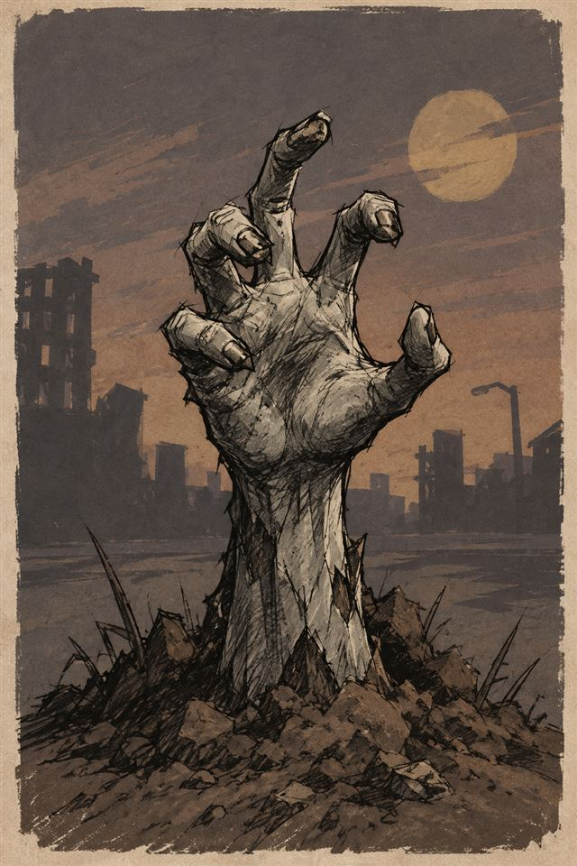
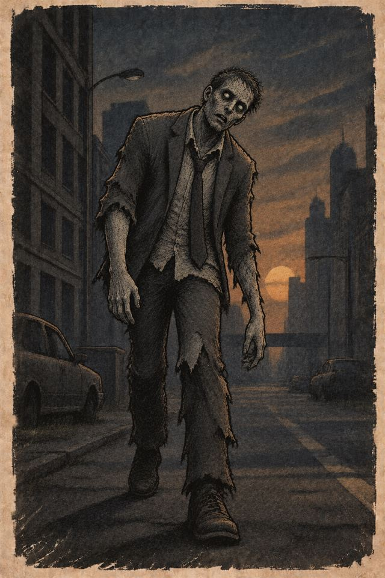
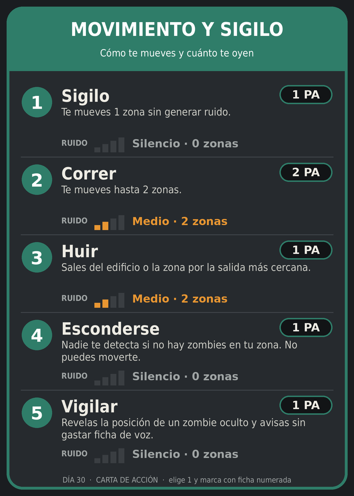
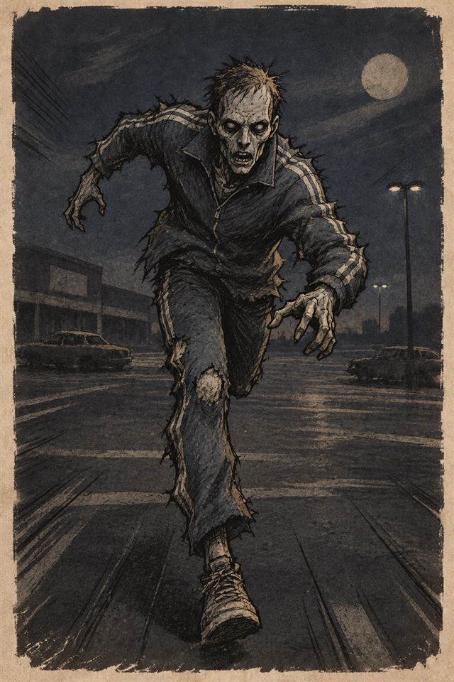
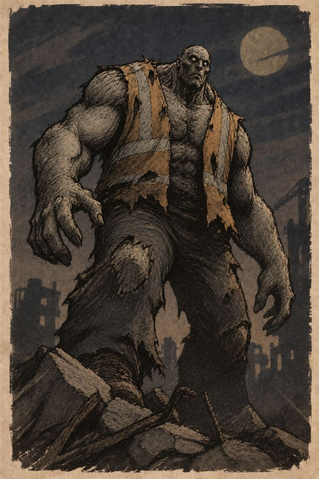
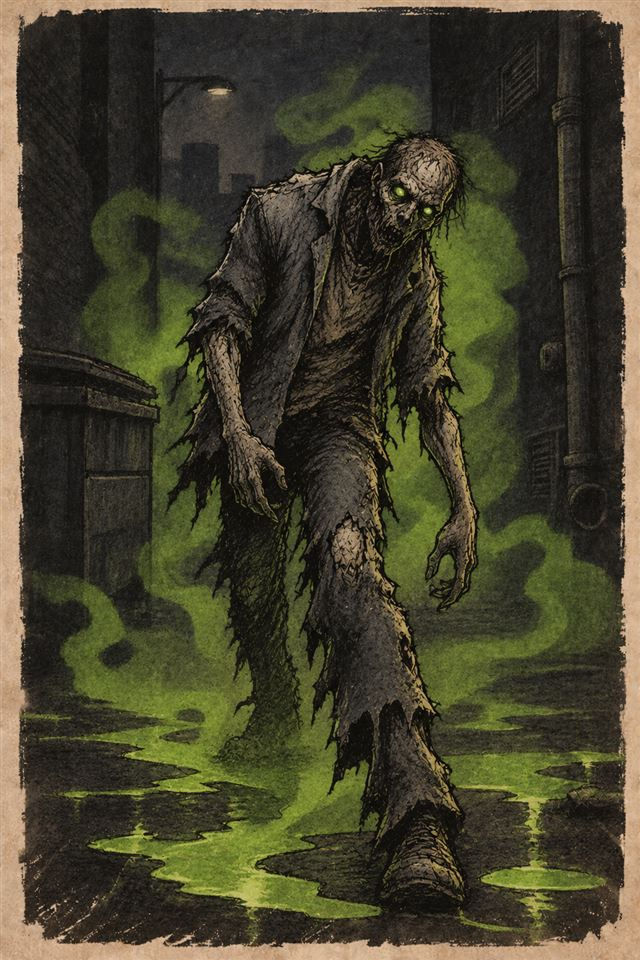
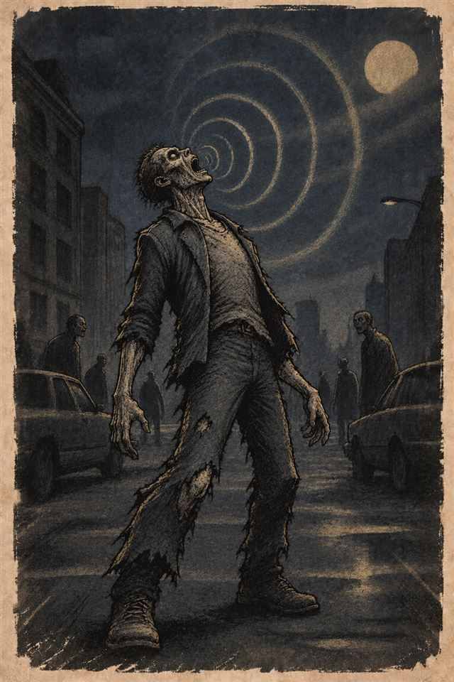

Este manual junta todo lo que se diseñó hasta hoy: las reglas de la prueba 1, la base, las losetas, las cartas, el trabajo del equipo de agentes (ideas, diseño, mecánicas, balance y revisión) y las decisiones de Santiago. Es un borrador para probar en Tabletop Simulator: todos los números se pueden tocar después de jugar.
| Tema | Decisión |
|---|---|
| Fatiga | Las acciones pesadas (como forzar una puerta) se acumulan y producen fatiga. |
| Alimento | Comida y agua forman parte de las raciones. Cada carta tiene su nombre y da 1 o más raciones. El agua además limpia heridas. |
| Heridas | Un solo tipo de herida. Sin mordida ni infección. Una herida sin limpiar atrae zombies. |
| Duración | Unas 2 horas. La partida dura 20 días, con descanso rápido opcional. |
| Peligro | Los 20 días se dividen en 3 niveles de peligro que suben la aparición de zombies. |
| Mazos | Mazos separados (alimentos, eventos, materiales, armas y munición, zombies, supervivientes…). Cada "robá una carta" dice de qué mazo. |
| Zombies | Un mazo de zombies que se juega después del turno de los jugadores; cada carta tiene 3 cantidades según el nivel de peligro. También se usa al entrar a un edificio. |
| Rebuscar | Una tirada de dado decide de qué mazo se roba. |
| Idioma | Voseo rioplatense en todo el material. |
| Nombre | «Día 30» es provisorio; se decide al final. |

La ciudad cayó. El grupo se refugia en una casa con patio sobre la calle Las Heras. Por la radio llegó una promesa: un helicóptero va a pasar el día 20, pero solo va a bajar si encuentra una señal de socorro armada y encendida.
Cada día tiene cuatro fases. En la Base construyen, curan y arman la señal. En la Planificación deciden quién sale y a qué barrio. En la Expedición recorren un barrio hecho de losetas, hora por hora, rebuscando en los edificios para llenar los mazos de la base. En el Regreso y la noche comen sus raciones y aguantan lo que venga a golpear las puertas.
La tensión central es el ruido. Lo rápido y lo fuerte hace ruido, y el ruido atrae zombies en el momento y, si se acumula, trae la horda. Cada herida sin limpiar también hace ruido: el olor a sangre los guía.
El tiempo es el otro enemigo. Pueden descansar para recuperarse, pero cada día que pasa sube el nivel de peligro y salen más zombies.
Al empezar el día 20, con las 5 etapas de la señal completas y al menos un superviviente vivo en la base.
Cada mazo tiene su propio dorso y su pila de descarte, al lado. Cuando una regla o una carta dice "robá una carta", siempre dice de qué mazo. Cuando un mazo se agota, mezclás su descarte y lo volvés a armar.
| Mazo | Cartas | Para qué sirve | Cuándo se roba |
|---|---|---|---|
| Alimentos | 24 | Comida y agua. Cada carta da 1 a 3 raciones. El agua también limpia heridas. | Al rebuscar. Se descarta al consumir y vuelve al mazo. |
| Materiales | 16 | Madera, clavos, chapa, alambre, cuerda, semillas, combustible. | Al rebuscar. |
| Armas y munición | 11 | Armas cuerpo a cuerpo y de fuego; cajas de balas. | Al rebuscar. |
| Medicina propuesta | 10 | Primeros auxilios y curar heridas en la base. | Al rebuscar. |
| Equipo propuesta | 10 | Walkie-talkie, baterías, bengalas, mochila de montaña. | Al rebuscar. |
| Objetos de señal propuesta | 4 | Radio, generador, manual técnico, GPS. Únicos. | Al rebuscar (con un 6 en edificios especiales). |
| Zombies | 37 | Tipo de zombie y 3 cantidades, una por nivel de peligro. | Después del turno de los jugadores, al revelar un edificio y con el resultado ¡Aaah! |
| Eventos | 28 | Tres partes: Amanecer, Calle y Noche. | Al empezar el día, al llegar al barrio y cada noche. |
| Supervivientes | 7 + 3 | Los iniciales y los que se rescatan. | En la preparación y con el resultado Rescate. |
Victoria. Al empezar el día 20 (Fase 1: Base) ganan si:
Grado de victoria propuesta: 1 punto por superviviente rescatado. Sirve para comparar partidas.
Derrota. Mueren todos los supervivientes del grupo, o llega el día 20 sin la señal activada y el helicóptero pasa de largo.
Si muere tu superviviente, tomás el control de uno del grupo que esté en la base. Si no queda ninguno libre, seguís decidiendo con la mesa hasta un rescate.
Fuerza, Destreza, Constitución y Percepción, de 1 a 5. El modificador es el valor menos 2 (de −1 a +3).
| Atributo | Sirve para |
|---|---|
| Fuerza | Atacar y hacer daño cuerpo a cuerpo |
| Destreza | Disparar y arrojar; Defensa |
| Constitución | Pruebas de resistencia (noche afuera) propuesta |
| Percepción | Guardia nocturna (suma su valor); Vigilar |
Prueba de atributo propuesta: d20 + modificador contra 10, salvo que la regla diga otra cosa.
| Puntos de acción | 3 por turno de expedición |
| Sangre | 6 como máximo |
| Fatiga | 0 a 3 |
| Defensa | 10 + modificador de Destreza |
| Mochila | 6 espacios (8 con mochila de montaña) |
Atributos de la mesa en línea. Habilidades revisadas por el equipo; el defecto hace que elegir a quién sacar sea una decisión. propuesta
| Superviviente | F/D/C/P | Habilidad | Defecto |
|---|---|---|---|
| Marta Ríos enfermera | 2/3/3/4 | Manos firmes. Primeros auxilios y limpiar una herida le cuestan 1 PA. En la base, 1 vez por día, cura una herida con 1 Medicina en vez de 2. | Turno doble. Cada vez que cura en la base, gana 1 de fatiga. |
| Raúl Ibarra ex policía | 4/3/3/2 | Entrenamiento. Ventaja en su primer ataque con arma de fuego de cada expedición. | Gatillo fácil. Si un zombie entra a su zona y tiene un arma de fuego cargada, tirá d6: con 1 dispara sin querer (1 disparo, ruido Máximo). |
| Sofía Lenz mecánica | 3/4/3/2 | Manos de taller. Forzar y Barricar le cuestan 1 PA, hacen un nivel menos de ruido y para ella no son pesadas. | No se va sin terminar. Si se queda en la base y hay materiales para construir, tiene que gastar la ficha del día en eso o gana 1 de fatiga. |
| Tomás Ferro cocinero | 4/2/4/2 | Raciones. 1 vez por día, una carta de Alimentos da 1 ración más. Ventaja al rebuscar en almacén y supermercado. | Pesado. No puede Correr dos turnos seguidos. |
| Nico Vidal estudiante | 1/5/2/4 | Ágil. Puede Correr dos veces por turno; la segunda, con ruido Bajo. | Inexperto. Un 1 o un 2 natural al atacar es pifia. |
| Aurelio Pando cazador | 3/3/2/4 | Rastreador. Su Vigilar llega a 2 zonas y, 1 vez por turno, no gasta PA. | Viejo. Si vuelve después de las 19:00, gana 1 de fatiga extra. |
| Elena Quiroga maestra | 2/2/3/5 | Calma. 1 vez por día, un superviviente del grupo quita 1 de fatiga extra al descansar. Con ella en la base, el evento «Discusión» no tiene efecto. | Sus alumnos. Si en el barrio hay una escuela, tiene que entrar y rebuscar al menos 1 vez antes de volver. |
| Superviviente | F/D/C/P | Habilidad | Defecto |
|---|---|---|---|
| Don Elías Ortega, radioaficionado | 1/2/2/4 | Con él en la base, la etapa 4 de la señal no necesita manual ni GPS: la arma en 2 días de descanso. | No sale de expedición. Consume 1 ración extra por día. |
| Carla Sosa, bombera | 4/3/4/2 | Llega con el Hacha de bombero. El infectado ácido no la salpica. | Si hay ruido Máximo en el mapa, su primer movimiento del turno es hacia ahí. |
| Lu, 12 años | 1/4/2/4 | Pasa por la claraboya y por ventanas chicas sin abrir ni romper nada. | Mochila de 4 espacios. Si muere, todos ganan 2 de fatiga. |
La partida dura 20 días, divididos en tres niveles de peligro. El nivel cambia al empezar el día indicado y no baja nunca.
| Nivel | Días | Nombre | Qué cambia |
|---|---|---|---|
| 1 | 1 a 7 | Aprendizaje | Mazo de zombies: unos 0,4 zombies por carta, casi solo caminantes; 2 de cada 3 cartas salen vacías. Eventos de nivel I. |
| 2 | 8 a 14 | Presión | Unos 1 zombie por carta; aparecen corredores, brutos, ácidos y chillones. Se suman los eventos II. |
| 3 | 15 a 20 | Cuenta regresiva | Unos 1,5 zombies por carta; casi ninguna sale vacía. Se suman los eventos III; 2 cartas de Noche por noche. |
En la Fase 1, el grupo puede declarar descanso en lugar de salir. El día se resuelve en un minuto:
El dilema: descansar cura y es seguro, pero gasta raciones y un día; cada día acerca el siguiente nivel de peligro. Meta a medir: 10 a 12 expediciones por partida.
Fase 2 · Planificación: sale un superviviente por jugador, todos al mismo barrio propuesta. Los que se quedan descansan (−1 fatiga esa noche); uno puede hacer guardia: no descansa, pero suma su Percepción a la Defensa de todas las entradas. Cargan la mochila con cartas del depósito y salen a las 08:00.
Fase 3 · Expedición (08:00 a 21:00): capítulos 8 a 16.
Fase 4 · Regreso y noche: descargar las mochilas al depósito · comer las raciones · recuperar sangre, descansar y borrar el esfuerzo · carta de Noche y ataque a la base · una línea en el diario y avanza el calendario.
| Barrio | Tipo | Viaje | Plantilla | Edificios posibles |
|---|---|---|---|---|
| Las Acacias | Residencial | 1 h | 3 × 3 losetas | Casa ×4, Almacén (2 ya saqueados) |
| Barrio Norte | Escuela y casas | 1 h | 4 × 3 | Escuela, Casa ×2, Farmacia, Almacén |
| Centro | Comercios | 2 h | 4 × 3 | Farmacia, Supermercado, Comisaría, Casa, Almacén, Ferretería |
| Parque industrial | Galpones | 2 h | 5 × 3 | Taller ×2, Estación de servicio, Ferretería, Supermercado, Almacén, Casa |
| Hospital San Roque | Zona sanitaria | 3 h | 4 × 3 | Hospital, Farmacia, Plaza, Casa, Almacén |
| Borde | Pasar | Ruido | Vista |
|---|---|---|---|
| Libre, puerta abierta, ventana rota | Sí | Pasa | Ve |
| Puerta cerrada | Abriéndola | −1 nivel | Tapa |
| Ventana intacta | Rompiéndola | −1 nivel | Ve |
| Pared, barricada | No | −1 nivel | Tapa |
Al llegar propuesta: robá 1 carta de Calle y robá del mazo de zombies tantas cartas como el nivel de peligro; colocalos tranquilos en el centro de losetas de calle al azar, sin contar la de entrada.
Cada turno es 1 hora. Llegan a las 08:00 más el viaje. Anochece a las 19:00: los zombies solo te detectan en tu misma zona, disparar tiene desventaja y se roban 2 cartas de zombies por turno. A las 21:00 termina la expedición: quien siga afuera pasa la noche afuera.
Volver. En la zona de entrada, Salir del barrio (1 PA). Llegás a la base cuando pasan las horas de viaje. Noche afuera propuesta: prueba de Constitución contra 12; si fallás, morís; si pasás, llegás al amanecer con +2 de fatiga, sin comer, y ese día no salís.
| # | Paso | Qué pasa |
|---|---|---|
| 1 | Supervivientes | Cada uno gasta hasta 3 PA, en el orden que quieran. El ruido se pone al momento en la zona donde termina la acción. |
| 2 | Aparición | Robá 1 carta del mazo de zombies (2 de noche) y colocá los del nivel actual (capítulo 11). |
| 3 | Zombies | Cada zombie actúa una vez. |
| 4 | Horda | Si una zona de calle, o un edificio sumando sus zonas, tiene 5 fichas de ruido o más, llega la horda. |
| 5 | Disipación y sangre | Quitá 1 ficha de ruido de cada zona. Después, cada herida abierta pone 1 ficha de ruido en la zona de su superviviente. |
| 6 | Reloj | Avanza 1 hora. Se renuevan los PA y termina "escondido". |
Con 3 PA podés repetir acciones. ▲ = acción pesada: deja 1 marca de esfuerzo (capítulo 14).
| Acción | PA | Ruido | Efecto |
|---|---|---|---|
Movimiento | |||
| Sigilo | 2 | Silencio | 1 zona. No con un zombie en tu zona. |
| Caminar | 1 | Bajo | 1 zona. |
| Correr ▲ | 1 | Medio | 1 o 2 zonas. Una vez por turno. No con herida en las piernas ni con fatiga 2. |
| Esconderse | 1 | Silencio | Hasta tu próximo turno solo te detectan los zombies de tu zona. Termina tu turno. |
| Salir del barrio | 1 | Silencio | En la zona de entrada. Con la mochila llena es ▲. |
Puertas y obstáculos | |||
| Abrir / cerrar puerta | 1 | Bajo | Puerta sin llave adyacente. |
| Forzar ▲ | 2 | Medio | Puerta con llave, trabada o reja. Sin tirada. Con palanca o hacha, 1 PA. |
| Romper ventana ▲ | 1 | Alto | Queda abierta para siempre. |
| Barricar ▲ propuesta | 2 | Medio | Gastás 1 Madera: una abertura adyacente pasa a barricada. |
Combate | |||
| Atacar | 1 | Del arma | Capítulo 12. Con un arma cuerpo a cuerpo de 2 espacios es ▲. |
| Destrabar | 1 | Silencio | Arregla un arma de fuego encasquillada. |
| Distraer propuesta | 1 | Medio allá | Tirás algo a una zona a 2 o menos que veas: el ruido sale allá. Gastás una carta. Con Bengala: Alto y alcance 3. |
Objetos y cuidado | |||
| Rebuscar | 2 | Bajo | Tirás el dado del edificio y robás del mazo que indique (capítulo 16). No con zombies en tu zona. |
| Limpiar herida | 1 | Silencio | Gastás una carta de agua: una herida tuya o de alguien de tu zona deja de sangrar (gotita a "limpia"). |
| Primeros auxilios | 2 | Bajo | Gastás 1 Medicina: recuperás 1 de sangre, vos o alguien de tu zona. |
| Comer al paso propuesta | 1 | Silencio | Gastás 1 carta de Alimentos: borrás tus marcas de esfuerzo. 1 vez por expedición. |
| Intercambiar | 1 | Silencio | Pasás o recibís cartas con alguien de tu zona. |
| Vigilar propuesta | 1 | Silencio | Mirás en secreto la carta de zombies de un edificio cuya puerta está en una zona adyacente: la robás y la dejás boca abajo sobre el edificio. |
| Soltar | 0 | Silencio | Dejás una carta en tu zona. Recogerla cuesta 1 PA. |

El ruido hace dos cosas: en el momento atrae a los zombies que lo oyen, y acumulado en fichas trae la horda.
| Nivel | Alcance | Fichas que deja | Ejemplos |
|---|---|---|---|
| Silencio | 0 | 0 | Sigilo, cuchillo, limpiar herida |
| Bajo | 1 zona | 1 | Caminar, abrir puerta, rebuscar, bate |
| Medio | 2 zonas | 1 | Correr, forzar, hacha |
| Alto | 3 zonas | 2 | Romper ventana, bengala |
| Máximo | Todo el mapa | 3 | Disparar, chillón, generador |
Lento y constante. Llega en grupo.

Se mueve 2 zonas, paso a paso. De noche nunca está tranquilo: no se lo ataca con ventaja después de las 19:00.

Su golpe quita 1 de sangre extra. Rompe una puerta cerrada con 4–6. Las armas de d4 solo le hacen daño con crítico.

Si te golpea, se daña una carta de tu mochila (elegís cuál). Si lo matás con cuchillo, bisturí o las manos, recibís 1 herida.

Al detectarte o al recibir daño sin morir, chilla: ruido Máximo en su zona y 1 caminante en la puerta. Una vez por expedición.
Valores de corredor, bruto, ácido y chillón: propuesta del equipo, a probar. "Vitalidad" es el daño que aguanta antes de caer; el daño se marca con fichas debajo de la figura.
Un zombie pasa a alerta cuando te detecta, va hacia un ruido, ataca o lo atacan. Vuelve a tranquilo en una fase de zombies en la que no detecta a nadie ni oye nada. Atacar a un zombie tranquilo da ventaja.
Te detecta si está en tu zona, o en una zona adyacente sin pared ni puerta cerrada de por medio (una ventana intacta no tapa la vista). De noche, o si estás escondido, solo en tu misma zona.
En la fase de zombies, cada uno hace lo primero que se cumpla:
Rutas. No abren puertas. Van por el camino más corto contando cada abertura cerrada como 4 zonas. Si quieren cruzar una abertura cerrada, tirá 1d6: con 6 la derriban (queda rota). Ataque: su tirada contra tu Defensa; si la iguala o supera, recibís 1 herida.
Reemplaza todas las tiradas de aparición. Cada carta muestra un tipo y tres cantidades: nivel 1 / nivel 2 / nivel 3. Aparecen los del nivel actual; un 0 es que no aparece nadie. Salvo que la carta diga otra cosa, aparecen tranquilos.
| Carta | Niv. 1 | Niv. 2 | Niv. 3 | Copias | Sabor |
|---|---|---|---|---|---|
| Calle vacía (caminante) | 0 | 0 | 1 | 5 | «Ni un perro. Eso es lo que más miedo da.» |
| Rezagado (caminante) | 0 | 1 | 1 | 4 | «Arrastra un pie. Llega tarde a todo, menos a vos.» |
| Caminante | 1 | 1 | 2 | 4 | «Tiene puesto el uniforme del correo.» |
| Pareja (caminante) | 1 | 2 | 2 | 3 | «Van de la mano. Nadie se animó a separarlos.» |
| Grupito (caminante) | 1 | 2 | 3 | 2 | «Salen del colectivo de a uno.» |
| Procesión (caminante) | 2 | 3 | 3 | 1 | «Bajan por el medio de la avenida.» |
| Atraídos por el ruido* | 0 | 1 | 2 | 1 | «Te avisé que esa puerta chirriaba.» |
| Corredor suelto | 0 | 1 | 1 | 3 | «Zapatillas de running.» |
| Corredor | 1 | 1 | 2 | 1 | «Pasos rápidos sobre el vidrio.» |
| Jauría (corredor) | 0 | 1 | 2 | 1 | «Cuando corre uno, corren todos.» |
| Bruto | 0 | 0 | 1 | 2 | «Era patovica de un boliche.» |
| Bruto despierto | 0 | 1 | 1 | 1 | «Se levantó de abajo de un auto. Corrió el auto.» |
| Infectado ácido | 0 | 1 | 1 | 2 | «La baldosa humea.» |
| Goteo (ácido) | 0 | 0 | 1 | 1 | «Plic, plic, plic.» |
| Chillón | 0 | 1 | 1 | 2 | «Tiene la boca abierta de más.» |
| Chillón lejano | 0 | 0 | 1 | 1 | «Del otro lado del barrio, un grito.» |
| Activación extra** | no aparece nadie | 2 | «Se dieron vuelta todos a la vez.» | ||
| Horda*** | 2+0 | 3+1 | 4+1 | 1 | «Es la calle entera que se mueve.» |
* Aparecen alerta directamente en la zona de calle con más ruido. ** Nivel 1: se activan otra vez los zombies alerta; niveles 2 y 3: todos. *** Caminantes + corredores, alerta, en el borde más cercano al ruido; después se mezcla el descarte con el mazo. Total: 37 cartas. Promedio por carta: 0,4 / 1 / 1,5 zombies.
Atacar (1 PA): d20 + modificador contra la Defensa del zombie. Si la iguala o supera, acertás y tirás el daño. Cuando el daño acumulado llega a su vitalidad, cae.
| Arma | Espacios | Daño | Ruido | Notas |
|---|---|---|---|---|
| Cuchillo de cocina | 1 | d4 + F | Silencio | Atacar por la espalda da ventaja. |
| Bisturí | 1 | d4 + F | Silencio | En la base, curar cuesta 1 Medicina menos. |
| Bate con clavos | 2 | d6 + F | Bajo | Pesada ▲. |
| Martillo, llave inglesa, tonfa | 1 | d6 + F | Bajo | |
| Hacha de bombero | 2 | d8 + F | Medio | Pesada ▲. Forzar cuesta 1 PA. |
| Pistola | 1 | d10 | Máximo | Fuego, alcance 2. |
| Escopeta | 2 | d12 | Máximo | Fuego, alcance 2. |
| Botella incendiaria | 1 | d10 a cada uno | Alto | Arrojadiza, alcance 2, un uso, toda una zona. |
Hay un solo tipo de herida. No hay mordida, infección ni contagio.
Tirá 1d6 para saber dónde fue. El efecto dura hasta que la herida se cura en la base.
| d6 | Zona | Efecto |
|---|---|---|
| 1 | Cabeza | Aturdido: tu próximo turno tenés 2 PA. Una segunda herida en la cabeza mata. |
| 2–3 | Torso | −1 de sangre extra. |
| 4 | Brazo izquierdo | La mochila tiene 1 espacio menos. |
| 5 | Brazo derecho | Desventaja al atacar. |
| 6 | Piernas | No podés Correr. |
Recuperar sangre propuesta: a la noche, +1 si comiste tus raciones y no tenés heridas abiertas; +1 más si descansaste. Primeros auxilios: +1 en el momento.
La fatiga no se gana por salir, sino por esfuerzo. Algunas acciones son pesadas ▲ y cada una deja 1 marca de esfuerzo en tu hoja.
Todas salvo Forzar son propuesta.
| Fatiga | Efecto |
|---|---|
| 0 | Ninguno. |
| 1 | Esa noche comés 2 raciones en lugar de 1. |
| 2 | Comés 2 y no podés Correr. |
| 3 | Agotado: comés 2, no corrés, tenés 2 PA y no podés hacer guardia. |
| +3 | Cada punto que no entra cuesta 1 de sangre. |
Quitar fatiga: quien se queda en la base sin hacer guardia quita 1 en la Fase 4. El descanso rápido quita 1 a todos.
El consumo se mide en raciones. Las cartas del mazo de Alimentos tienen nombre propio (una lata, una botella de agua, una bolsa de arroz) y un valor de 1 a 3 raciones. Comida y agua cuentan igual para las raciones.
Rebuscar (2 PA, ruido bajo) gasta 1 registro del edificio. Tirá 1d6 y mirá la fila del tipo de edificio: te dice de qué mazo robar 1 carta. propuesta
| Edificio | 1 | 2 | 3 | 4 | 5 | 6 |
|---|---|---|---|---|---|---|
| Casa | ¡Aaah! | Nada | Alimentos | Alimentos | Materiales | Medicina |
| Almacén | ¡Aaah! | Materiales | Alimentos | Alimentos | Alimentos | Equipo |
| Supermercado | ¡Aaah! | Nada | Alimentos | Alimentos | Alimentos | Medicina |
| Farmacia | ¡Aaah! | Nada | Medicina | Medicina | Medicina | Alimentos |
| Hospital | ¡Aaah! | Medicina | Medicina | Equipo | Medicina | Señal |
| Comisaría | ¡Aaah! | Nada | Armas | Armas | Equipo | Señal |
| Ferretería | ¡Aaah! | Materiales | Materiales | Materiales | Equipo | Señal |
| Taller | ¡Aaah! | Materiales | Materiales | Armas | Equipo | Señal |
| Estación de servicio | ¡Aaah! | Alimentos | Materiales | Materiales | Equipo | Señal |
| Escuela | ¡Aaah! | Nada | Alimentos | Medicina | Equipo | Señal |
"Armas" = mazo de Armas y munición. La Plaza no se rebusca. Esta tabla reemplaza las tablas d20 de objetos por edificio del borrador anterior; mantiene su carácter (la farmacia da medicina, la comisaría armas). Falta que Mecánicas y Balance la revisen.
Cartas del borrador "Cartas de objetos", repartidas en los mazos nuevos. Los valores de raciones son propuesta.
| Carta | Raciones | × |
|---|---|---|
| Lata de conservas | 1 | 3 |
| Paquete de galletas | 1 | 3 |
| Frasco de mermelada | 1 | 3 |
| Barras de cereal | 1 | 3 |
| Bolsa de arroz | 2 | 3 |
| Botella de agua agua | 1 | 4 |
| Cantimplora agua | 1 | 4 |
| Caja de provisiones | 3 | 1 |
«Agua»: también limpia una herida. Total: 30 raciones.
| Carta | Vale | Esp. | × |
|---|---|---|---|
| Tablones | 2 Madera | 2 | 3 |
| Clavos y tornillos | 1 Clavos | 1 | 3 |
| Chapa acanalada | 1 Chapa | 2 | 2 |
| Rollo de alambre | 1 Alambre | 1 | 2 |
| Soga | 1 Cuerda | 1 | 2 |
| Sobres de semillas | 1 Semillas | 1 | 1 |
| Bidón de combustible | 1 Combustible | 2 | 3 |
| Carta | × |
|---|---|
| Cuchillo de cocina (d4, silencio) | 2 |
| Bate con clavos (d6, bajo) | 2 |
| Hacha de bombero (d8, medio) | 1 |
| Pistola (d10, máximo) | 1 |
| Escopeta (d12, máximo) | 1 |
| Caja de balas (3 disparos) | 4 |
Frasco de pastillas, caja de vendas, botiquín de pared, alcohol desinfectante, jeringa y ampolla (×2 cada una). Todas valen 1 Medicina: Primeros auxilios en la calle, 2 curan una herida en la base.
| Carta | Efecto | × |
|---|---|---|
| Walkie-talkie | Hablar sin ruido con el otro walkie. 1 Batería por día. | 2 |
| Baterías | 1 día de walkie. | 4 |
| Bengala | Distraer con ruido Alto; o etapa 3 de la señal. | 3 |
| Mochila de montaña | Mochila de 8 espacios. | 1 |
| Carta | Etapa |
|---|---|
| Radio portátil | 1 · Radio |
| Generador (2 esp.) | 2 · Energía (+1 Combustible) |
| Manual técnico | 4 · Mensaje |
| GPS de mano | 4 · Mensaje |
Amanecer (9), Calle (9) y Noche (10), cada carta marcada I, II o III según el nivel de peligro desde el que entra al mazo. Ejemplos:
Cada mazo va a tener su propio dorso, distinguible de un vistazo por color e ícono. El de zombies usa la ilustración de la mano que sale del suelo. Las cartas pasan del estilo vectorial del prototipo a tinta sobre papel, como las ilustraciones de los zombies, con una franja de color por familia en el borde izquierdo y el valor de raciones bien grande en las de Alimentos.
Una casa con patio sobre la calle Las Heras: dormitorio, cocina, sala común con la radio, patio y acceso al techo. Cinco entradas: puerta principal, puerta del patio, ventana de la cocina, ventana del dormitorio y techo.
Defensa de una entrada = nivel de barricada (0 a 3) + trampa + Percepción del guardia.
Construcción. Cada día reciben 1 ficha (2 con Taller). Cada barricada, trampa o mejora gasta 1 ficha y sus materiales. Las fichas no se guardan.
| Nivel | Cuesta |
|---|---|
| 0 → 1 · tablones | 1 Madera, 1 Clavos |
| 1 → 2 · doble tablón | 2 Madera, 1 Clavos |
| 2 → 3 · blindaje | 1 Chapa, 1 Clavos |
| Mejora | Cuesta · efecto |
|---|---|
| Taller | 2 Madera, 2 Clavos, 1 Chapa · 2 fichas por día |
| Huerta | 2 Madera, 1 Semillas, 2 raciones de agua · +1 ración los días pares |
| Recolector de agua | 2 Chapa, 1 Alambre · +2 raciones de agua cuando llueve |
| Cama extra | 2 Madera, 1 Clavos, 1 Cuerda · lugar para un rescatado (hay 4 camas) |
| Trampa | Cuesta | Def. |
|---|---|---|
| Alarma de latas: nadie queda sorprendido | 1 Cuerda, 1 Alambre | +1 |
| Estacas: el primero recibe d6 | 2 Madera, 1 Clavos | +1 |
| Alambre de púas (ventanas, techo) | 2 Alambre | +2 |
| Fosa tapada (puertas): +1 fatiga a quien cava | 1 Madera, 1 Cuerda | +2 |
| Trampa incendiaria, un uso | 1 Combustible, 1 Cuerda | +3 |
Cinco etapas, en orden. Se marcan en la Fase de Base con los objetos ya en la base.
| Etapa | Qué es | Cómo se cumple |
|---|---|---|
| 1 | Radio | Llevar a la base la Radio portátil (o una antena o radio de las cartas de evento). |
| 2 | Energía | El Generador y 1 Combustible. Encenderlo es ruido Máximo: esa noche, +1 carta de Noche. |
| 3 | Baliza | Entregar 1 Bengala, o armar un fuego en el techo: 2 Madera, 1 Combustible y 1 ficha de construcción. |
| 4 | Mensaje | El Manual técnico o el GPS (con uno alcanza). Don Elías puede reemplazarlos. |
| 5 | Activación | Con las etapas 1 a 4, desde el día 17, gastan 1 Combustible. Desde esa noche hasta el día 20, +1 carta de Noche cada noche. |
Completar antes no adelanta el rescate: el helicóptero llega el día 20. Conviene activar tarde, pero no tanto que falte combustible o alguien vivo.
| Componente | Objeto de TTS | Archivo |
|---|---|---|
| Cada mazo | Custom Deck | Cartas de 750 × 1050 px en una hoja de hasta 10 × 7 (69 cartas + la carta oculta abajo a la derecha). Lado máximo 4096 px. JPG calidad 90. Dorso propio de 750 × 1050. |
| Losetas de calle y edificio | Custom Tile | 1500 × 1500 px (500 por zona), JPG. |
| Base, ciudad, tiempo | Custom Board | 3600 × 2240, 3200 × 2100 y 3600 × 1200 px, JPG. |
| Hoja de jugador | Custom Tile | 2400 × 1600 px, JPG. |
| Zombies (tranquilo / alerta) | Custom Tile circular | 512 × 512 por cara. |
| Ruido, daño, olor a sangre | Custom Token | 256 × 256, PNG con transparencia. |
| Supervivientes | Custom Figurine | 600 × 900, PNG con transparencia. |
| Dados | Nativos de TTS | — |
Propuestas del equipo que todavía no son regla. Se prueban después de la base.
Fuentes: los artefactos de Día 30 (kit y simulador de la prueba 1, base y losetas, cartas de objetos, mesa en línea, dirección de arte), los documentos del equipo en diseno/ y las decisiones de Santiago del 14 de octubre de 2026.
Silencio 0/0 · Bajo 1 zona/1 ficha · Medio 2/1 · Alto 3/2 · Máximo todo/3 · −1 nivel por pared, puerta cerrada, ventana o barricada.
d20 + F (cuerpo) o D (fuego) ≥ Defensa · daño dado + F (cuerpo) · ventaja contra tranquilo · 20: máximo · 1: falla, +1 ficha, se traba.
−1 sangre · abierta: +1 ficha de ruido por turno · limpiar: 1 PA + agua · curar: 2 Medicina · morís con sangre 0 o 2 en la cabeza.
| Acción | PA | Ruido |
|---|---|---|
| Sigilo | 2 | — |
| Caminar | 1 | Bajo |
| Correr 1–2 zonas ▲ | 1 | Medio |
| Esconderse | 1 | — |
| Abrir / cerrar | 1 | Bajo |
| Forzar ▲ | 2 | Medio |
| Romper ventana ▲ | 1 | Alto |
| Barricar ▲ | 2 | Medio |
| Atacar | 1 | Del arma |
| Destrabar | 1 | — |
| Distraer | 1 | Medio allá |
| Rebuscar | 2 | Bajo |
| Limpiar herida | 1 | — |
| Primeros auxilios | 2 | Bajo |
| Comer al paso | 1 | — |
| Intercambiar / Vigilar | 1 | — |
| Salir del barrio | 1 | — |
4 marcas ▲ = +1 · 1: come 2 · 2: no corre · 3: 2 PA · más de 3: −1 sangre.
Caminante D8 V5 +2 · Corredor D12 V4 +3, 2 zonas · Bruto D10 V12 +4 · Ácido D9 V6 +2 · Chillón D8 V4 +1.
Nivel 1: días 1–7 · Nivel 2: 8–14 · Nivel 3: 15–20.